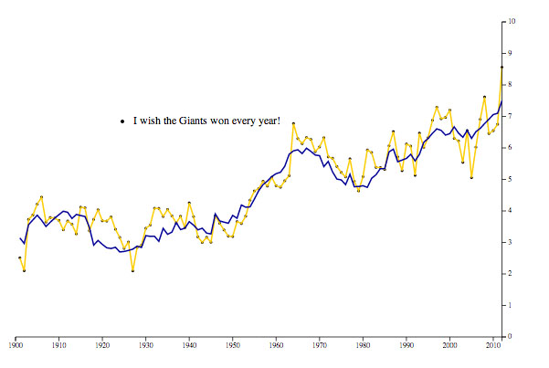

Map
Striking Out!
NY Times Bar Chart

We received an urgent request from the editor to find out what cities had the highest rise in unemployment between 2009 and 2013. We found out that Elkhart-Goshen in Indiana experienced a marked increase in unemployment, while Yuma Arizona recovered really well
As summer 2013 came to an end, the Mexican government announced its national energy reform. According to the government, one of the main drivers for a national energy reform is to change articles 27 and 28 of the Mexican Constitution which currently prohibits foreign companies from exploring and/or exploiting hydrocarbons (petroleum oil and natural gas) within the country. PEMEX, Mexico’s national oil and gas company, was nationalized in 1938 by then President Lazaro Cardenas, in a move against oil barons that had been exploiting the country’s fossil fuel resources with almost nonexistent taxation for little less than a century. More recently Mexico has been touted as having the world’s 4th largest shale gas reserves, as well as abundant deep-oil proven reserves, and recent amendments to the constitution are aimed at bring foreign investment and expertise into the country to exploit a resource that PEMEX has little to no experience on.
The future exploitation of shale and deep-oil reserves is currently being sold to the general population as something that will be beneficial to everyone. The energy reform highlights that revenues derived from shale exploitation will make gasoline cheaper and more available, will increase GDP and create employment, and will increase government revenues that will be used (obviously) for:
Here I hypothesize that investments to exploit oil resources in Mexico in the past, and the ensuing GDP growth, has not reflected in a reduction to the level of unemployment, improved minimum or median wages within the country, reduced poverty, or increased education performance of Mexican children according to international standards. I will use data from the World Bank , United Nations Development Indicators , Mexico’s agencies for social development , and OECD’s PAIS rankings on educational achievement (link).
I aim to have plots with double Y1 and Y2 axis. I will plot two things on the Y1 axis that will change interactively. The first will be Mexico’s oil production on the Y1 axis (million barrels of oil), and the second will be Mexico’s oil revenues according to annual oil prices (link EIA). Time is always on the X Axis.
On the Y2 Axis you will be able to choose what to see. You’ll be able to compare Mexico’s Gini Coefficient – a measure of income inequality against different countries, Mexico’s educational achievements on the last decade, Mexico’s minimum and median wages in time, and investments in healthcare, education, and water infrastructure relative to oil expenditures.
Some Examples of the maps I will learn how to use include: